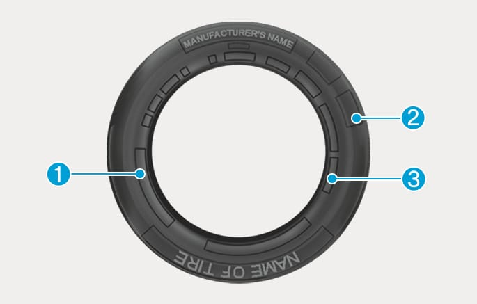
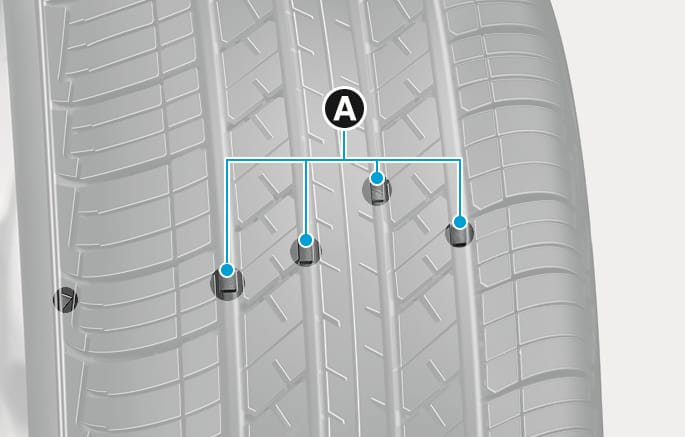
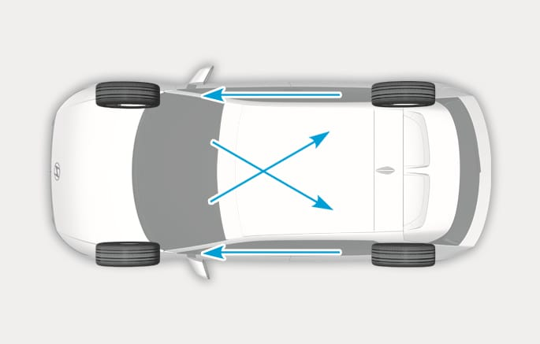

타이어 및 휠 점검하기
안전한 주행을 위해 주기적으로 타이어 및 휠 상태를 점검하십시오.
타이어의 상태와 공기압은 안전한 주행은 물론, 차량의 성능 및 연비에도 영향을 끼칩니다.
예비 타이어를 포함한 모든 타이어가 차가울 때 공기압을 점검하십시오.
'차가운 타이어'란 3시간 이내에 주행한 적이 없거나, 주행 거리가 1.6 km 이내인 차량의 타이어를 의미합니다.
-
주행 직후에는 타이어의 온도가 상승하므로 타이어의 공기압이 실제보다 높게 측정됩니다.
-
추천 타이어 공기압에 대한 자세한 설명은 '타이어 및 휠 규격'을 참고하십시오.
-
주행 직후에 타이어 공기압을 조정하지 마십시오. 주행 직후의 타이어 공기압은 차가운 타이어의 공기압에 비해 4-6psi 높습니다.
-
당사 직영 하이테크센터나 블루핸즈에서 타이어 공기압을 점검하고 추천 공기압을 유지하십시오.
-
공기압이 낮으면 타이어 과다 마모, 조향 성능 저하, 연비 저하, 타이어 과열에 의한 손상, 타이어 비드부 안착 성능 저하, 휠 변형, 반제품 간 박리 현상이 발생할 수 있습니다.
-
공기압이 높으면 승차감 및 조향 성능 저하, 타이어 트레드 중앙부의 과다 마모, 제동 거리 증가, 타이어 진동음 증가, 거친 도로 주행 중 타이어 손상 등이 발생할 수 있습니다.
-
타이어의 옆면에는 규격 및 사양 정보가 제조 일자와 함께 표기되어 있습니다.

2C_TireSideWallLabelling
- 타이어 형식(치수/속도 등급)
- 품질 등급(마모, 마찰, 온도)
- 제조일자
타이어 교체 시 다음과 같은 정보를 확인하십시오.
타이어 형식(치수/속도 등급)
타이어 형식의 표기 예는 다음과 같습니다(실제 사양은 '타이어 및 휠 규격' 참고).
-
예: 215/60/R17 96H
-
215: 타이어 폭(밀리미터)
-
60: 편평비(타이어 높이/폭×100)
-
R: 래디얼 타이어(타이어 구조)
-
17: 휠 지름(인치)
-
96: 부하 지수(최대 지지 하중 코드)
-
H: 속도 등급
-
-
휠 사양은 다음과 같이 표시됩니다.
예: 7.0J X 17
-
7.0: 휠폭(인치)
-
J: 휠 형상
-
17: 휠 지름(인치)
-
-
실제 휠 사양은 1장 '타이어 및 휠 규격'을 참고하십시오.
-
승용차 및 소형 승용차에 적용되는 속도 등급별 최대 안전 주행 속도는 다음과 같습니다.
속도 등급
최대 속도
S
180 km/h(112 mph)
T
190 km/h(118 mph)
H
210 km/h(130 mph)
V
240 km/h(149 mph)
W
270 km/h(168 mph)
Y
300 km/h(186 mph)
제조 일자
타이어는 제조 후 자연적으로 노화되므로, 임시 타이어를 포함해 제조 일자로부터 6년이 경과한 타이어는 사용 여부와 관계없이 새 타이어로 교체해야 합니다.
타이어의 손상 및 파열로 인한 차량 손상 및 인명피해를 방지하려면 타이어의 제조 일자를 주기적으로 확인하고 노후한 타이어를 교체하십시오. 제조 후 6년이 경과한 타이어에서는 반제품 간 박리 현상이 발생할 수 있습니다.
'DOT'로 시작하는 코드의 마지막 네 자리 숫자를 통해 타이어 제조일(생산 주차 및 연도)을 확인할 수 있습니다.
-
예: DOT XXX XXWWYY
-
WW: 생산 주차
-
YY: 생산 연도
-
품질 등급
-
타이어의 상대 성능은 주행 습관이나 정비 상태, 도로 상태, 기후 등 실제 주행 조건에 따라 기준치와 다를 수 있습니다.
-
온도 등급이 A, B인 타이어는 법으로 규정된 최소한의 온도 등급을 초과하는 발열 내구성을 가진 제품입니다.
-
마모 등급(TREAD WEAR): 특정 조건에서의 마모 비율을 기준으로 하는 상대적인 비율로, 수치가 높을수록 마모에 강합니다.
-
마찰 등급(TRACTION): AA, A, B, C 등급으로 구분되며, 젖어 있는 아스팔트 또는 콘크리트 노면에서 측정된 타이어의 제동 성능을 나타냅니다(AA: 최고 등급, C: 최하 등급).
-
온도 등급(TEMPERATURE): A, B, C 등급으로 구분되며, 실험실의 통제 조건 아래서 측정된 열 분산 능력(발열 내구성)을 나타냅니다(A: 최고 등급, C: 최저 등급).
온도 등급은 적정 공기압 및 하중 조건에서의 측정 결과입니다. 과열로 인한 타이어 파열 및 이로 인한 재산 손실이나 인명피해를 방지하려면 다음 지시를 따르십시오.
-
과속으로 주행하지 마십시오.
-
타이어의 공기압이 낮은 상태로 주행하지 마십시오.
-
과적 상태로 주행하지 마십시오.
타이어가 과열된 상태로 계속 주행하면 소재 변질로 인해 타이어 수명이 단축될 수 있으며, 온도가 과도하게 상승하는 경우 타이어가 파열될 수 있습니다.
정기적으로 휠 얼라인먼트와 타이어 밸런스를 점검하십시오.
휠 얼라인먼트와 타이어 밸런스 조정을 통해 차량의 성능을 유지하면서 타이어 수명을 최적화할 수 있습니다.
다음과 같은 증상을 발견하는 경우, 당사 직영 하이테크센터나 블루핸즈에서 휠 얼라인먼트와 타이어 밸런스를 점검하십시오.
-
편마모 등 타이어의 비정상적인 마모
-
차량 쏠림
-
포장 도로 주행 중의 진동
타이어 밸런스 조정 시 적절한 밸런스 웨이트를 사용하십시오. 일부 부적절한 밸런스 웨이트를 사용하는 경우 알루미늄 휠이 손상될 수 있으며, 타이어와 휠 사이의 밀착부가 벌어져 공기가 샐 수 있습니다.

2C_TireWareIndicator
- 마모한도 표시밴드
-
타이어 트레드가 마모 한계에 도달하면 마모한도 표시밴드가 노출됩니다.
-
타이어 트레트의 홈 깊이에 따라 타이어 교체 시기를 확인할 수도 있습니다.
-
일반 도로: 1.6 mm 이하면 교체
-
고속도로: 2.4 mm 이하면 교체
-
타이어 트레드의 마모한도 표시밴드가 노출되면 타이어를 교체하십시오.
-
편마모 등 비정상적 마모가 발생한 타이어는 마모 한도 표시밴드 노출 여부와 상관없이 즉시 교체하십시오.
-
차량 출고 시 장착된 타이어와 동일한 규격의 타이어를 장착하십시오('타이어 및 휠 규격' 참고).
-
타이어 교체 시 타이어 밸런스를 조정하십시오.
-
타이어를 교체하고 일정 거리를 주행한 후 휠 너트의 조임 상태를 점검하십시오.
-
타이어가 심하게 마모되거나 잘못 조립된 경우 차량 사용을 중단하고 최대한 빨리 타이어를 교체하십시오.
-
마모된 타이어는 차량의 구동력, 제동 성능 및 조향성을 저하시킵니다.
-
타이어가 파열되면 심각한 재산상 손실 및 인명피해가 발생할 수 있습니다.
-
-
안쪽과 바깥쪽이 구분되는 비대칭 타이어로 교체하는 경우, 타이어 외측이 바깥쪽을 향하도록 장착하십시오.
-
장착 방향이 바뀌면 주행 시 승차감, 타이어 마모도 및 차량 성능에 큰 영향이 미칠 수 있습니다.
-
-
차량 출고 시 제공된 휠 및 타이어와 동일한 사양을 가진 휠 및 타이어로만 교체하십시오.(크기, 유형, 트레드, 제조사, 부하 용량)
-
사양이 다른 타이어를 장착하면 주행 성능이 저하되고, 조향력 상실로 인한 전복 등 심각한 사고가 발생할 수 있습니다.
-
비상시 어쩔 수 없이 사양이 다른 타이어를 장착한 경우 고속도로를 주행하지 말고 비포장도로를 이용해 저속으로만 이동하십시오.
-
-
타이어 및 휠을 교체할 때 4개 바퀴의 타이어와 휠을 동시에 교체하십시오.
-
일부 바퀴의 타이어 및 휠만 교체하는 경우 조향 성능과 승차감이 크게 감소할 수 있습니다.
-
-
타이어의 크기는 휠의 회전 속도 및 ABS 시스템의 작동에까지 영향을 줄 수 있으므로 주의하십시오.
-
ABS 시스템은 휠의 회전 속도를 비교해 작동합니다.
-
-
타이어 교체 시 4개 타이어 모두 출고 시 제공된 타이어와 동일 규격 타이어를 사용하십시오.
-
사양이 다른 타이어를 혼용하면 ABS 및 ESC 시스템이 정상적으로 작동하지 않을 수 있습니다.
-
-
타이어를 교체하거나 위치를 교환할 때 브레이크 디스크와 브레이크 패드를 함께 점검하십시오.
-
전륜과 후륜에 사양이 동일한 타이어 및 휠을 장착하십시오.
-
비상시 예비 타이어를 장착한 경우, 80 km/h 이하로만 주행하고, 최대한 빨리 규격 타이어 및 휠로 교체하십시오.
출고 시 제공된 휠과 동일한 사양의 휠을 장착하십시오.
사양이 다른 휠을 장착하지 마십시오. 휠과 베어링의 수명이 단축될 수 있으며, 다음과 같은 요소에도 영향을 미칠 수 있습니다.
-
브레이크와 타이어의 간격, 차체와 타이어의 간격, 타이어 체인 간격
-
속도계 및 거리계 정밀도
-
전조등 각도 및 범퍼 높이
-
휠 사양은 다음과 같이 표시됩니다. 예시) 7.0J X 17
-
7.0: 휠폭(인치)
-
J: 휠 형상
-
17: 휠 지름(인치)
-
-
실제 휠 사양은 '타이어 및 휠 규격'을 참고하십시오.

2C_TireRotation
정기 점검 주기에 따라 타이어 위치를 교환하면 타이어의 편마모를 방지할 수 있습니다.
-
위치를 교환할 때 타이어의 비정상적인 마모 또는 손상 여부를 점검하십시오.
-
타이어 위치를 교환하고 일정 거리를 주행한 후 휠 너트의 조임 상태를 점검하십시오.
타이어의 비정상적인 마모는 대개 부적절한 공기압, 휠 얼라인먼트 이상, 휠의 불균형, 급제동 등으로 인해 발생합니다.